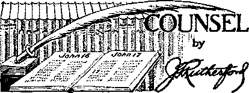

Contents
New Government
No Power Can Suppress This Truth
Whittling Down the National Debt
Under the Totalitarian Flag The Cloister-God
' "What the Hierarchy Thinks of the Bible 15
Counsel by J. F. Rutherford
U. S. A. State, War and Navy Departments 18
British Comment
Published every other Wednesday by WATCHTOWER BIBLE AND TRACT SOCIETY, INC. lit Adams St,, Brooklyn, N. Y„ U. S. A.
Editor. Clayton J. Woodworth
Business Manager Nathan H. Knorr
Five Cents a Copy
. • (la year In the United States
J1.26 to Canada and all other countries
NOTICE TO SUBSCRIBERS
’ Remittances: For your own safety, remit by postal or express money order. When coin or currency Is lost in the ordinary mails, there is no redress. Remittances from countries other than those named below may be made to the Brooklyn office, but only by International postal money order.
Receipt of a new or renewal subscription will be acknowledged only when requested. Notice Of Expiration is sent with the journal one month before subscription expires. Please renew promptly to avoid loss of copies. Send change of address direct to us rather than to the post office. Tour request should reach us at least two weeks before the date of issue with which it is to take effect. Send your old as well as the new address. Copies will not be forwarded by the post office to your new address unless extra postage is provided by you.
Published also in Afrikaans, Bohemian, Danish, Dutch, Finnish, French, German. Greek, Hungarian, Japanese, Norwegian, Polish, Portuguese, Spanish, Swedish, Ukrainian; also special Australian edition in English.
OFFICES FOR OTHER COUNTRIES
.England 34 Craven Terrace, London, W. 2
Canada 40 Irwin Avenue, Toronto 5, Ontario ■ Australia 7 Beresford Road, Strathfield, N.S.W. South Africa 623 Boston House, Cape Town
Entered as second-class matter at Brooklyn, N, Y,, under the Act of March 3, 1879,
Appetizers bi
Paying on Installments 1
A Canadian farmer, in reply to a request for1 pa’yffiefft’dT'fiiktallments due on his land, . wrote; >
“Dear Sir, I got your letter about what. I owe‘you. Now be paehent. I ain’t forgot yqj^; ; Please wait. When I have the money, Ipay you. If this was Judgement Day, and you was no more prepared to meet your Maker than I am to meet your account, you sure would have to go to Hell. Trusting you will agree to do this, I am, yours truly.”
(Drop)tical Illusion* .
A drunk tried several times to navigate a revolving door, but finally gave up the attempt in disgust and leaned despondently against a lamp-post. .
A man came along the street and. walked into the door. As it revolved, the other sides revealed a pretty girl stepping from it. The drunk looked intently at her and remarked:
“It’s a good trick, but I still don’ shee wha’ that guy did with his clothes.”—Labor.
Couldn't Be Done
Judge Gruff: Speeding, eh? How many times have you been before me?
Speedmore: Never, your honor. I’ve tried a . number of times to pass you on the avenue, but my old car won’t go over 50 miles an hour and your new limousine does 80.—Pathfinder,
Harvesting the Crop*
A farmer was asked whether he had had a good year. “Yes,” he exclaimed, “I had four' , cows and three hogs killed by railway trains, and two dogs and eleven chickens killed by motorcars. I cleared a pile of money I”— Kelly gram.
All Here?
“Yes,” was the reply. “We’re all here, except the ass. Come in.”
“And in His name shall the nations hope.”—Matthew 12:21, A.R.V.
Volume XXI Brooklyn, N.Y., Wednesday, December 27, 1939 Number 529
EVERY reader of this magazine and every reader of The Watchtower and of the many books and booklets written by Judge Rutherford is well aware that the Philistines of old represented the Roman Catholic Hierarchy, who admit and who have admitted for centuries that they seek world control and who admit and who have admitted for centuries that they would not in the least hesitate to commit murder on any scale, large or small, to gain their ends. The foe that the Roman Catholic Hierarchy most dreads is the Truth about The Theocracy, and that Truth today is the exclusive possession of Jehovah’s witnesses.
Finland is a Protestant country, almost solidly Lutheran. It has been a good place to proclaim Jehovah’s Kingdom because the Lutherans have claimed to look to the Bible alone as their source of instruction. The destruction of the Finnish government will be well-pleasing ‘to the Roman Catholic Hierarchy and to its father, the Devil, because the Vatican is clever enough to see that if the Finnish people get the Truth about The Theocracy the power of the pope can never rise in the Baltic states as the pope hopes.
The Modern Philistines
The modern Philistines are not only the Roman Catholic Hierarchy, but they include every other government that aims at worldwide dominion and every other government that constitutes a part of the dominion of the earth which the Devil promised to Jesus if He would fall down and worship him.
From this point of view the so-called “Communist” government of Russia, which hopes to overrun the world, is as much a part of antitypical Philistia as is the Reich under Hitler, which also, according to its own statements, has plans and expectations for the complete domination of mankind. ■
DECEMBER 27, 1939
From this point of view Stalin is as much a representative of and a spokesman for Philistia as is the mikado of Japan, who also, in the textbooks used in the public schools of Japan, is claimed to be the rightful ruler of the entire world and is doing what he can to make that claim come true. The mikado claims to be descended from the gods; which is old stuff. Caesar claimed to be' descendant of the gods. You probably heard about that bird. Alexander was another that had no sense of humor. Nebuchadnezzar was another grasseater with the same idea. The kaiser was another born sucker; he lives at Doorn. Mussolini lives in Rome. Haile Selassie, “Lion of the Tribe of Judah,” used to live at Addis Ababa, but now lives in London.
From this point of view the Soviet of Russia is as truly subservient to the will of the pope and of the Devil, who is the pope’s father, as was Chamberlain when he knelt in the presence of the pope, or as was Franklin Delano Roosevelt when he sent Jos. P. Kennedy, America’s Roman Catholic ambassador to Britain, to Vatican City to attend the four-hour exhibition of foolishness when the “triple crown of heaven, earth and hell” was placed on the “manly brow” of Eugene Paeelli, the alleged vicar of Jesus Christ.
None of the stupendous events which are taking place in the world today can be understood or their significance properly assessed unless it be clearly seen that the Devil’s pressing objective in all the world st°P at °uce the work of Jehovah’s witnes.^.. bs it has been stopped by present totalitarian monstrosity methods in Ethiopia, Spain, Austria, Czechoslovakia, Danzig, Albania, and Poland.
France is even closer to the pope than the seventh world-power (Britain and America), and the work of Jehovah’s witnesses has been officially stopped in France.
3
When the final collapse of the Spanish Republic took place only a relatively few escaped. Twenty-one airplanes carried fleeing Re-publican leaders to French Algeria and three French merchant ships evacuated about 2,000 more during Valencia’s last night. The balance will most certainly be murdered by Franco’s Nationalist Auditoria (military police). Two million Republicans have been listed as subjects for “examination”; and if past practices count for anything, not less than 200,000 of these will be murdered by The Butcher.
The pope blessed Franco and lauded him as a true son of the Church. What could be more natural? Both of them are children of the Devil and of the Devil’s own church.
♦ The Catalans are not particularly fond of their Fascist conquerors. So when a parade is staged they salute in their own fashion, hiding the thumb and spreading the fingers, thereby representing by common consent the four bars of the proscribed Catalan flag. The Falangist authorities of Barcelona have decreed penalties for this form of salute. The Catalans must give the Fascist salute and give it right, or else—.
♦ Four British gunners, who deserted to join the Spanish Republican Army, and aftenvards were imprisoned by Franco’s troops, escaped to Gibraltar, where they were court-martialed for their desertion. They were glad to get back to British territory, even to be court-martialed. They testified that in Spanish prisons the inmates receive but one meager meal and a little water daily. .
Spanish Business in German Hands ♦ In a lengthy letter in the New York Times, Ramon de la Sota, secretary of the Basque Delegation in the United States, shows that Spain in general and the Basque country in particular are now under the economic control of Germany. Mills, mines, commerce, and other industries are all coming into German hands..
“Friends” Abandon Relief Work in Spain ♦ According to the testimony of Alfred Cope, of the American Friends Service Committee, when the troops of Franco occupied the city of Ciudad Real, they crowded 20,000 soldiers of the Spanish Republic into the bull ring and kept them there 20 days, with almost no food at all, and very little water, and so tightly packed that most of them could not lie down. Mr. Cope and his fellow workers had to give up their work of caring for the Spanish children because six or seven shiploads of food intended for starving children were seized by Franco and given to his soldiers. And further, though the food intended for the children was taken before it could get to them, yet the official orders were that they could not even eat the remnants of the food available until they sang Franco songs.
♦ Louis Fischer, author, blames Britain for the destruction of Spanish democracy; saying, The central blame for the defeat of Spanish democracy rests upon the British Government, The British sold nothing to the loyalists, and helped to dissuade the French and the United States from selling anything to them. The consequent death of the Spanish republic has already reacted and is sure to react further to the detriment of the British Empire. , . . History records undeniably that throughout the eight years of appeasement the democracies did not help a single victim of aggression They did help the aggressors,
♦ At Coimbra, Portugal, a four-story wooden building was sprayed with oil, a number of youths were installed as tenants, and these were to be rescued by firemen after the building had been set on fire. The mock fire turned out to be a real one, and 14 of the boys were killed by jumping from windows or were burned to death. The occasion was the Holy Queen festival. The boys were to receive 45 cents each for their part in the show.
Portuguese Casualties 50 Percent
♦ It is now disclosed that 18,000 Portuguese wrere engaged, besides Moors, Italians, Germans and a few Spaniards, in the destruction of the Spanish Republic. Half of these Portuguese adventurers were either slain or wounded.

♦ A back-call was arranged to play the lecture “Face the Facts” in a certain home. The man of the house was good enough to invite two friends of his, all of whom listened very attentively. At the conclusion of the speech one of them said that in the last days many false prophets would arise, and wanted to know how to differentiate between the true and the false prophets. After quoting Deuteronomy 18: 21, 22, and Matthew 7 :16, the witness went on to explain in this manner.
Approaching the time of the end the Lord began preparation to select and bring together a remnant, a people for His name, as He had foretold He would do. (Joel 3; 1, 2; Jeremiah 23:1-8; Isaiah 52:1-15; Isaiah chapter 54) Hence we find at and from the year 1870 a number of Christians belonging to different denominations began to gather together and devote themselves to Bible study, particularly in connection with the Lord’s second coming. It was not long before Jehovah revealed to them that 1914 would mark the time of the end. Thereafter, these sincere Bible students went about preaching to the world what would come to pass about 1914. Among other things a world war was foretold. In contradiction, the clergy at that time said, “We are now civilized; there can be no more wars”; and, “The Bible does not contain such message.” Notwithstanding, the year 1914 proved the clergy to be false prophets. Not only that, but, being part of the world, the clergy were forced to identify themselves as servants of the Devil by using their pulpits to preach young men to wholesale slaughter in the name of God hypocritically and against God’s commandment. Therefore they are guilty of wholesale murder.
While the great war was in process the people were told that that war would end all war and would establish democracy in the earth; but has it ?
Immediately the war was over The League of Nations was conceived and brought forth and everybody pinned their hopes onto it for peace and security, more so because the clergy hailed it as the “political expression of Christ’s DECEMBER 27, 1939 kingdom on earth”. Jehovah’s witnesses told the world that the League would certainly fail in its purpose, because the end of this wicked world is here and the kingdom of Christ must replace it, according to the prophecies of the Bible. For such a declaration Jehovah’s witnesses were severely criticized. Today, however, it must be admitted that their words have come true.
Then Communism, Fascism, Nazism, have been prophesied in their respective order as being the means of establishing the peace and security of the nations. Consequently such movements have been put to the test and are found wanting. Conditions obtaining in countries under such systems indicate the futility of such schemes. In fact, such dictator nations are becoming a menace to world peace.
Around the year 1930 world conferences were held and there was much talk about disarming. Jehovah’s witnesses refused to side with such movements; to the contrary, they said in words of the prophet: ‘Associate, ye rulers; have counsel together, and it shall come to nought; speak the word and it shall not stand.’ Even so, the modern false prophets spoke the word of disarming; but it did not stand. Conversely, they are now arming to the teeth.
Next the pope blew his “holy” trumpet and in pious and profound tones he proclaimed 1933 as a “holy year”, expecting that during his “holy year” ways and means would be devised to establish peace and prosperity. This afforded Jehovah’s witnesses one more opportunity to warn the people; that the end of the “holy year” would find them in greater distress; that the present conditions must continue to get worse til! the climax is reached, and that Armageddon cannot be averted!
We are now nearing the year 1940, and yet the nations are far from being at peace and safety. In fact, they are having an armament race. As a final resort all liberty is being removed and the people are put in fear and are regimented according to the wishes or whims of some dictator. Peace of mind, happiness and comfort are almost extinguished from the earth. Meanwhile the clergy and other' false comforters preach a new prophecy, yea, a new savior, “moral rearmament”! But it is too late now for any worldly movement to prosper. Jehovah foresaw and foretold that which would happen in the last days, and His prophecy must be fulfilled.
The only movement that will prosper from now on is the establishment of Christ’s kingdom on earth; and it is to the best interests of the Christian to side with that kingdom and to keep far from worldly schemes and systems, ail of which will go down shortly.
Let the facts above cited and the Scriptures prove who are the true and who the false prophets.
The next question asked at the above meeting was this: Unless God's commandments are strictly adhered to, one is liable to be destroyed- Cannot God be termed a dictator for such action? The answer was: A dictator compels the people to obey his will in order to attain his own selfish ends, while the people being so subjected reap oppression, unhappiness and death. On the other hand, the Lord invites people to obey ITis will voluntarily; and whosoever does so enjoys health, prosperity, and life in happiness. Jehovah gains nothing by such an arrangement. Our ‘host’ was quite satisfied and happy to see the difference between a dictator and the Great Theocrat, Jehovah. It is hoped what has been said hereinbefore will prove of interest to Consolation readers,-—!’, X. Tsatos, Burma,
It rarely happens that a Jew becomes a Christian. By that is meant a true Christian, one who faithfully discharges his obligation as a witness of the Most High. A case, however, has occurred in Germany, that country where of late years such a bitterly hostile spirit to true Christianity has been rife.
In utter disregard of the Scriptural statement that among Christians “there is neither Jew nor Greek, but all are one in Christ Jesus”, the Nazis deliberately encourage racial hatred. The following letter recently received from a woman correspondent demonstrates this. She writes:
“After a life of distress and trouble I have the great privilege of realizing from God’s Word that my Jewish birth gave me no assurance of salvation. Without further delay I left the organization of nominal Jews, and became an active worker in the ranks of God’s true people. This was in 1933. In 193(1 I was arrested in Berlin by the Secret State Police and was imprisoned for fifteen days. In 1937 I was condemned to six months’ imprisonment. Now, as you know, the anti-Jewish persecutions have been raging in Germany since November 10 last. Early one morning my furniture was smashed to fragments. I have been ordered to sign a paper leaving my house and possessions to the Aryans. .The German government is granting me a respite till January 1939 to make a decision.”
What a'sad case! No one could accuse this woman of having left the Jewish Community as far back as 1933 to escape the Nazi persecutions, seeing that she openly allied herself with Jehovah’s witnesses, who have been cruelly treated in Germany from the beginning of Hitler's assumption of power.
The Nazis tolerate such nominal Christians as Catholic archbishops, etc,, but true Christians they wickedly torture. They would have spared none of the early apostles, doubly criminal in their eyes as Jews and disciples of Christ. If the Savior returned to Nazi Germany today, as the man Christ Jesus, He would be decapitated by the executioner’s axe. But, praise be to Jehovah, it is as God’s great Executive Officer that Christ returns, and it is lie who at Armageddon will wield the Executioner’s sword against His enemies.— Translated from French Consolation by F. R. Freer.
Education of Chilliwack, B.C.
♦ The police had interfered with and stopped the street corner witness work in Chilliwack, and stated that if we came to do this again or hold any information marches we would be arrested. Upon advice from the Society to go ahead regardless of what they said or did, in spite of their by-law enacted against us, we organized a united information march for Saturday, July 8, and invited all the witnesses from the Greater Vancouver company to cooperate in making this a success. The witnesses realized this as an issue and rallied 200 strong. We met several miles outside of the city and organized for action. Each group as they were told off were placed in charge of a captain wffio walked beside the marchers and kept them properly spaced, also to act as a witness m case of trouble.
Chilliwack is laid out in the form of a wheel, with all principal streets meeting in the center. We made the “attack” from five outside points at once and all met at the hub at the same time. It was a wonderful opportunity, the witnesses were delighted,, and Chilliwack was taken by storm. A witness placed in the center of the hub to prevent confusion reports that both police and populace were literally confounded as this barrage of locusts swarmed into the city, made a neat hairpin turn, and returned along the same street—only to repeat the operation again and again.
Jehovah’s Kingdom publishers, at Bombay, India
All had been serene when a policeman first saw the march. He partly ran across the street, but as he turned he saw another group coming his way, and still another and another. He stopped in confusion, scratched his head, and what he said to himself would appear to be nobody’s business! A small bunch could be dealt with, but this was too big a hornets’ nest to stir up; so he did nothing. Later on he was heard to say to the chief of police, “We’ve got to change the by-law”; to which the chief replied, “By-law, nothing! Look at them, they’re all over the place.” The marchers continued for an hour or more and Jw’s returned in triumph,
Sunday morning 111 publishers put into the field and combed the entire district from end to end in a house-to-house witness, inviting all to attend a public meeting in the Masonic Hall and hear “Fascism or Freedom”. For five of those that came the lecture got too hot and they left before the finish, but the witnesses were overjoyed with the victory Jehovah had given. Many and varied were the expressions of appreciation heard as the publishers recounted their experiences. One witness remarked, “I wouldn’t have missed this for a thousand dollars.” All the witnesses perDECEMBER SZ, 1939 formed with remarkable precision; there was no irregularity, no halting, no discussion; they obeyed instructions. This was noticed by the police, who remarked, “These people are organized! We received no tip of their coming and here they are from everywhere.”
Some of the goats overheard during the march remarked, “These fellows ought to be run out of town”; others, “They should be shot.” The Salvation Army became so confused that their band stopped, their singing halted, and the leader had to start over several times because of the mistakes he made; then he called attention to our “disorderly” conduct, which made everybody turn around and look in our direction.
But there was also the opposite to be heard when one chap in the crowd read “Religion is a snare and a racket”, and remarked, “By Jove! There are some good people in town yet.” Another, “You’re d~—- right! I believe that myself.” A policeman watched one of the leaders make a perfect right-about turn at the corner and said, “That’s fine, Buddy; keep it up.” A woman grabbed a publisher by the arm and exclaimed, “Is that Judge Rutherford? I have lots of his books and like them fine.”—F. J. Franske, zone servant.
Sign going up, towed by airplane, Portland, Oregon
Oklahoma conventioners painted 50 ears white
♦ Having already sent in some letters giving to the public an explanation and a view and understanding of the wonderful moving pictures of the book of Esther so eminently proper, so vitally important at this time, for the people of good will to consider, understand and appreciate to their lasting benefit and preservation, I was endeavoring to proceed on through to the development of the final climax pictures, therein showing just where we are on the stream of Biblical time, the preparation being made by Jehovah for the safety and lives of His ‘‘other sheep”, the people of good will, the great multitude who only are to be left after Armageddon upon the earth to fill it with a race of righteous people carrying out Jehovah’s mandate given to Adam to multiply and fill the earth. None of these babies will ever die. But when my letters are censored and curtailed, when enlightening and truth-giving pictures are stricken from the frame or record, when the picture of one of the leading characters of the drama, the villain of the play, Haman, and its meaning, is obliterated, stricken out, how am I to show the meaning of the book of Esther and its drama?
And why suppress this picture? Why not let this man Haman, who built a scaffold for another and was hanged on it himself, be anti-typically identified ? It can be done if you will identify and locate the moving cause and spirit, the men who caused the arrest of (rod’s people in Griffin and the putting of them on the chain gang at La Grange at hard labor. Truth, truth, it’s God’s truth, and you can’t suppress it, Mr. Editor. It is coming out in the full fair open, because a power greater than man or devil is behind it. It is Jehovah God’s “strange work” and very shortly it will be His “strange act”. And no power will stop that either. What does it mean ? Why, it means the taking possession of men and women, and the earth, by God’s government of absolute justice and righteousness under Jesus Christ, His Executive Officer, and the obliteration, destruction and death of the Devil’s government and rule, the Devil himself and his religious and other representatives. Sir, how am I to proceed in truthful or Biblical presentation? How can the real truth, the facts, come to mind or sight or proper and prosperous , understanding? And how can life-giving conclusions be reached or acted upon, when the picture is so marred by censorship, or clipped, smeared or wounded by typographical error, seemingly so vitally aimed? I say to you in all candor, in words of absolute soberness, we are now in the very beginning of a world-wide cleansing process, a cleaning out, a deadly destruction of “this present evil world”, especially those who “hold the truth in unrighteousness”, and no press or people, no process of man. can stop it or prevent its publication or preaching. Sir, as Biblically expressed, 'This gospel (good news) of the kingdom shall be preached in the whole world for a testimony unto al! the nations, and then shall the end come.’ And the preaching is almost finished. Why, sir, it goes on to say, “when therefore ye see the abomination of desolation which was spoken of by Daniel, the prophet, standing in the holy place.” What does this mean? Why, Jehovah God’s kingdom is here, ruling amidst its enemies. The totalitarian government system, backed by Hitler, Mussolini and the ruling richest religious organization of earth are standing in the holy place, are taking and will take charge of the earth, endeavoring and thinking to get rid of the “nation not desired”. And then when they do get possession, as they will, in hilarity, in wieked lawlessness, exclaim “Peace and safety”, then, according to God’s Biblfe, “sudden destruction eometh upon them,” administered, if you
And there was a load of information signs within the cart as well—-London
Weeks family (Texas) pioneers; the fine lad next his mother was killed when he accidentally touched a fence charged with electricity, and his sister was also similarly killed when she went to his aid.
please, by “this nation not desired”, this glorious government of Jehovah under Christ His Executive Officer. And no wicked man shall be permitted to live upon the earth. Such are the things I would publish forth in your letter column, as I draw the curtain and throw the light upon the glorious moving pictures of the hook of Esther. If you and yours are in truth and practice it, be true to that grand shibboleth that heads that column. Will the great masses of the people hear and heed f No, only the people of good will, the “other sheep”, the millions now living that will never die, hear and live. The great masses go down in death as at the time of the flood. It is time to give the people notice that they are called upon to give attention to and to investigate the facts relating to this warning of Jehovah God, The moving pictures of the book of Esther are for their enlightenment.
This preparation for preserving the good and utterly destroying the wicked, these mighty things, Mr. Editor, are not being done in a corner, but are being heralded from the house tops. This righteous destruction and judgment are impending and trembling to start. Whether an editor is in sympathy with letters written, or approves sentiments or beliefs therein expressed, should not have any weight in determining their publication, or else I have not, and also the public has not understood the method, the practice and purpose of the Telegraph in giving opportunity for letter writing for publication in the Telegraph. In the interest of clarification I ask the publication of this letter and comment and advice upon it of your own.—Lamar Clay, in the Macon (Ga.) Telegraph.
♦ In Fresno, California, a religionist called on a barber, asking, “Do you go to church?” “No,” replied the barber, “but I do believe in God and in Christ.” Said the religionist, “You are crazy.” And the barber replied, “I could say that of you, but I will not.”
{To be contwmed)
ETW'jS WHEN the propagandists and the presidential aspirants and the - statesmen of the Republican party attempt to frighten the American people with the national debt, under the head of atiame that some high-priced commercial publicity agent supplied for them, “National Debt Week,” common honesty demands that they tell the American people the truth. The truth is that the national debt is forty billion dollars. The truth also is that twenty of those billions of dollars existed as the national debt when Franklin D. Roosevelt took office in March, 1933. The truth further is that a Republican president, Herbert Hoover, created four billion dollars of that national debt with little to show for it except breadlines by the hundreds in the greatest and richest nation in the world. The truth further is that had not Andrew Mellon, under the permission and the patronage of do-nothing Calvin Coolidge, given as far as he could the fruits of American prosperity in the late twenties to the big business interests of this country, had he not taken off their backs the just tax burden they should have borne during those days, there would have been no national debt when the depression began and the whole credit facilities of this country would have been available for an intelligent leadership and statesmanship to have made effective war upon this, the greatest enemy that has ever landed upon America’s shores.
So, twenty billion from forty billion leaves twenty billion dollars, that that administration has added to the national debt. The truth also is that two billion dollars of that debt went to pay the bonus, a part of the debt that the American people owed to the veterans of the World War. The truth also is that Franklin D. Roosevelt vetoed the bonus, and the Congress, with the evident approval of the American people and with the congressional support of the Republican party, passed it over his veto. The truth also is that if Herbert Hoover’s Republican administration had had a fair appreciation of the country’s obligation to her veterans of the World War, he, in the day of American prosperity, instead of taking the taxes off the back of the very rich in this country so they could use those savings for speculative purposes, would have paid this bonus and been through with it instead of driving America’s war heroes out of the city of Washington at the point of the bullet and the bayonet under the personal direction of the chief of staff of the United States Army, acting under the personal command of the president of the United States.
Two billion from twenty billion leaves eighteen billion, then. There are more than three billion in the Treasury unspent. That is cash on hand. Three billion from eighteen billion, then, leaves fifteen billion. The truth further is that there are two billion in the stabilization fund. That, too, is cash on hand. That leaves thirteen billion. The truth further is that there are four billion dollars of recoverable assets. That is to say, securities actually on hand which will yield that amount, securities which would be worth that in any bank’s portfolio, the kind of securities the banks, insurance companies, and other financial institutions do have in their portfolios. That leaves nine billion dollars. The truth further is that the people of the United States, and therefore the Government of the United States, has something definitely to show for that nine billion dollars, because it went primarily into the greatest public construction program this country has ever seen.
That includes every structure of every kind that the PWA and the WPA have helped to build, all that has been done in the CCC program, all the aid that’s been given to agriculture, a great deal of the expenditures we made upon the national defense, all that’s been done in the development of the country’s natural resources in soil conservation, reforestation, the development of power resources, the TVA, the Boulder Dam, the Coulee Dam, the Bonneville Dam, the Reclamation program of the West, the flood control of the Mississippi, the Missouri, the Ohio, the greatly enlarged road building program, the dust bowl improvement program, the public parks, playgrounds and other recreational facilities of the country which every day are making, through the children of this country, a healthier and a happier America. These are valuable and lasting assets. Something to show for what has been spent as well as something to give a job to a man or a woman who otherwise faced starvation or the humiliation of the breadlines. —United States Senator Claude Pepper, of , Florida, in The American Forum of the Air.
Bo you need a new stomach ? Maybe Igj*.* t Jjd vour set of aluminum utensils was too expensive and is too pretty to throw away, and so you have a stomach ulcer or a cancer. Anyway, it seems that there is still a chance to live if as much as one-fifth of the stomach remains intact. Dr, Hans Finsterer, of Vienna, takes the offending exit side of the stomach (made so by people sleeping on their right sides instead of on their left, as they should), removes it, and, to give the patient a new stomach, lays alongside it one of the canals of the upper intestine, the jejunum. He fastens it to the stomach with a long slit opening between them. After a few months the jejunum balloons out and the patient is almost as good as new. Ninety-five percent of the eases recover.
♦ For the first time on record a blood clot which closed the pulmonary artery (the great vessel connecting heart and lungs) was removed from a patient in the North Middlesex County Hospital, and the patient lived. It was necessary for the surgeon to cut away three ribs, open the bag surrounding the heart, open the artery, drag out the blood clot, sew up the artery, massage the heart back into action (after it had been inactive six minutes) and close the bag about it. The patient was kept in oxygen for nine days, but made a complete recovery.
♦ A twelve-year-old girl near Marion, Arkansas, was terribly burned when a can of hot tar exploded as she stood beside it. Legs, hands and face were almost burned away, but after five months of skin-grafting from her back her face has been remade and has not even a scar and by the time she is discharged from the hospital, it is hoped and believed, she will be normal in every way.
♦ The British Medical Journal describes the case of an orphan girl, born without legs, who at eighteen years of age was fitted with arti-fieial limbs and is now learning to dance. The fitting was done by an expert military limbfitting surgeon.
DECEMBER 27, 1939
Odd Thing to Swallow
♦ At Baltimore, Harry Du Chaine, 44 years of age, had removed from his lungs a five-ounce lead fishing-line sinker which had been a part of his anatomy so long that it had become enveloped with tissue. The odd thing about it is that Mr. Du Chaine had no recollection of ever swallowing this thing that was almost big enough to choke an ox. How would you go about it to explain that?
Here is a guess as to how it happened. Du Chaine was a boy of good size, say twelve years of age. He was on the bank of the Patapseo river, or on a wharf jutting into it, watching a fisherman. The fisherman jerked a big fish out of the water, the line snapped and fish and sinker went in the air together. Both the boy and the fisherman were watching the fish and neither one saw the sinker. The boy’s mouth was open as the fish went through the air. By an odd freak of nature the sinker went down his open throat and lodged in one of his bronchial tubes, knocking him unconscious as it did so. When he eame to himself, he had no recollection of what occurred. The fisherman was busy recovering his fish and did not know that the lad had been rendered unconscious, his recovery was so quick.
♦ Donald Scott, Catford, London, England, born with ptosis of the eyelids, which made it impossible to see except by looking down, now has eyelids as good as the other boys. They were made for him out of the flesh of the left hip. And is he glad? He said, '‘Why, when I look at the floor I can see the ceiling.” Now the savage young brainless animals that mocked him don’t tease him any more. He can see as well as they.
At the Royal Waterloo Hospital, England, a surgeon removed bits of muscle from his leg and grafted them into his eyelids. The operation was a complete success, and after five years in which the little fellow had been unable to open his eyes because the muscles of his eyelids remained undeveloped, he can now open and close his eyes voluntarily, and see all about him the wonderful things the Creator has made for the blessing of all.
What a miracle is sight! What a terrible thing it is not to have it! And what a loss to those who lose it!
The Cloister-God
t As a seventecn-year-old girl I en-tered the Cloister Zams (Tyrol) with the intention there to serve the only true God in the midst of .in m w a nuns. With me,
about 80 such girls, from every cardinal point of the world, also entered. But this number dwindled rapidly, only a fraction thereof becoming nuns. In the cloister the important thing was to learn to do homage to the eloister-god. After three or four days we were expected to do as we had seen the older cloister-maidens do. These went daily in rotation one. two and three times to the novice-mistress, kneeled before her, spoke something to her, kissed her hand and erueifix, some even kissing the ground before her. I was amazed at these doings of idol worship, and it never entered my mind to imitate them. They made mt; shudder. One day I was beckoned to: I too must learn to do these acts of homage. This novicemistress explained that she functioned in God’s stead: was His representative: I therefore must do exactly as the others and kneel before her. Not thinking of God’s commandment, tremblingly I bowed the right then the left knee. But bowing the knees was not enough; my legs, now almost stiff from horror, 1 must bend cringingly, I must kneel completely before this god and say, ask, petition, or confess something. The commandment of God says: "I am the Lord thy God . . . Thou shalt have no other gods before me. Thou shalt not bow down thyself to them.’ (Exodus 20:1,3,5) I wms summoned daily; and not giving any thought to God’s commandment I slowly, automatically, learned this ritual— but the true God I worshiped in spirit and in truth. Other girls, more sensible than I, who did not learn these ceremonies in a few weeks, but, heeding God’s commandment, rebelled against giving a nun the devotion and worship due God only, were dismissed as unfit for tlie cloister. But the young God-defamers received the candidates’ garb: a white neck-scarf and a black juvenile hood.
Later, a much more serious defamation of God was instilled. Fridays, nine o’clock in the evening, after the nocturnal prayer, we had to proceed in great silence to the ehapel-hall. Along the walls were benches upon which vre could sit. In the middle (on the wall) there was a large erueifix; to the front of the hall, the throne-seat of the noviee-mistress. She read to us several man-made doctrines, but nothing from the alone true Word of God. Upon a nod from her the oldest candidate, with folded hands, knelt in the middle of the hall and loudly confessed her sins (the innocent child had no real sins) as follows:
"Sister Novice-Mistress Epiphania, I beg for forgiveness! I lost a sewing needle—I was not sparing with the thread—I dropped the scissors to the floor-—I looked out of the window—I passed hurriedly over the stairs—I was tardy in coming—1 allowed my hand to hang—once I coughed loudly—once I laughed —twice I spoke a bit loud—I slumbered in the choir—I sipped the soup. God recompense me for my slumber and the hot soup; I beseech thee again.’ Then she arose and with hanging head and folded hands strode to the throne of the cloister-god, knelt, again in a whisper besought forgiveness, which this deity granted with a nod, for which the hand of the novice-mistress, her crucifix and the ground before her feet had to be kissed.
Thus in rotation, one after the other, all defamed God. Several new entrants and I also cried over all this, partly in silence and partly audibly. Suddenly a horror-stricken entrant arose, emitted a cry of rage, slammed the door thunderously, and proceeded cursing to the sleeping quarters. Shortly thereafter another entrant began to cry inconsolably, left the chapel-hall, and wept all night. The novicemistress, seeking to quiet us, said softly: “This is caused only by the Devil.” Upon this several other entrants began to weep and become alarmed. Thereupon this cloister-god ended the farce. All had to kneel before the novice-mistress and to say to her in unison: “Because of these and many other faults we humbly implore forgiveness from the dear Lord and pray for a penance.” Then kneeling, the penance Psalm, 53, was read to them, all kissed the floor and retired to sleep, if indeed after such experience they could go to sleep.
The brave maidens who mutinied against such defamation of God appeared no more among us. They -went home again after a few days, because they preferred to worship God
instead of man. In order to retain us in the cloister the noviee-mistress related the following little story:
“The reverend mother general-superioress, sister Borgias, once saw in the night the Devil in person sitting over the cloister gate upon the housetop. He enticed the entrants so that they stay not in the cloister—”
In reality, the probable reason, at most, why he sat upon the Cloister was, because it was his possession.
Just how much more do we need, Mr. President?
What did this Devil ritual net several of my deceived colleagues—these young girls? Did not Jesus say that the Devil was a murderer from the beginning? Our first novice-mistress was seriously tubercular —the tubercle feverflush was upon her cheeks, she had a pointed blue nose, blue lips, blue fingernails, coughed incessantly, always had a handkerchief for her sputum in her right hand. In the other hand she held her crucifix, which, according to cloister-custom, as her idol, she kissed often, thus infecting it. So also the second novi co-mistress, sister Joo. Both nuns had on their hands millions of tubercle bacilli, and transmitted these to others. They began to ail and cough. Within a few years they died of tuberculosis. I could mention names.
The crucifixes, rosaries and garbs, kissed and fondled by these tubercular sisters, were in turn inherited by new young sisters; they also inherited that death. In the cloister, therefore, is not the Devil a murderer of humans?
Imprudent ailing schoolsisters also often offer to school children their carved Lord God idols, besmeared with tubercle bacilli, to kiss; and why wonder when apparently inexplicably some of these school children must die of incurable tuberculosis?
After one or two years, when the idolworship has permeated the flesh and blood of the candidates, they may become novices. They are given another name. Their hair is shaved off clean and they are clad in hypocrites’ garb. These all are Biblical marks of rejection. (Jeremiah 7:29) The novices must learn the regulations of the Order and acclimate their mode of living to these commandments of men. They never see a Bible, because in the eyes of the cloister-god it is a book that can lead to ruin. And yet, God’s holy will is disclosed to us only in the Bible.
After the period of probation the novices take a vow to live according to these commandments of men; further, as if to mock God, there is put into their hands, in place of the Bible, the Order’s regulations containing only man’s commandments, at their side a carved image as their Lord God in defiance of Jehovah, and, adding to this, the greatest defamation of Jehovah, namely, that of
• recognizing the supe
rioresses as deities. What Jesus said to the Jewish clergy, that He says today to the nuns and clergy: “ . . , Thus have ye made the commandment of God of none effect by your tradition. . . . But in vain they do worship me, teaching for doctrines the commandments of men.”—Matthew 15: 6-9.
After the death of Jesus and the apostles doctrines of men were substituted for the true Word of God. An Italian from Imola also rendered a decision in such belief dispute: “Rome has spoken and the question at issue is settled.” By this he rejected the Word of God, the Bible, and established Roman doctrines, and was rewarded by the pope with the title of honor “Church instructor” and the God-defaming name “Chrysologos”, which means Golden Word. He was also declared holy by the pope and his portrait was placed
upon the altars to worship. Unfortunately I ‘had to blindly carry the name of this monster for 24 long years.
In that time of early Christian history, true Christians in every place were no longer permitted to read what the prophets, Jesus and the apostles had taught, but must believe what the Italians in Rome taught. Later when some of our great-grandparents did read the Bible, they were fastened to torture machines, their joints horribly torn apart; some punctured upon a bayonet-machine, others tortured with the garrote, roasted upon a red-hot grate, beheaded by the guillotine, etc. Even today in the Vienna Museum the torture chamber with the various instruments of torture may be seen. All this happened to our ancestors through instigation of popes of that time, if they disbelieved the man-made doctrines of the Roman popes which are at variance with the Word of God. Some of our great-grandparents died as true saints of God under these tortures; but, of course, are not acclaimed as holy by Rome. Fear of the tortures caused many to profess the “faith” of the Catholic church. It is from such, held in mortal fright and fear of man, that the Roman Catholic “faith” came down to us through tradition and by inheritance. One after the other we became captive unwittingly of the Roman Catholic church. The doctrines of men originating in Rome are examined in the booklet Uncovered by the light of the Bible, thus enabling one to easily recognize them as lies.
One will recali the rapid decline in money value and rise in commodity prices after the war. Availing themselves of this the Cloister Earns enriched itself at the expense of the village inhabitants by cunning purchases of real estate. The sellers were thus robbed of their possessions and grew poor. This happened to the impoverished as a result of their pastors’ advice, who as church deputies had insight in the happenings of the day.
My former pupil in training, at that time instructress at Vandans Montafon—originally a country girl from Tyrol, purchased very cheaply a cow at this time for the cloister. But because she had not previously paid knee-tribute in Zams, the mother-house, she was ordered by telegraph to appear there in her defense. There, among other things, she told the general-superioress that she was not the Lord God; and for this the nuns’ ’ veil was taken from the sister. The sister became angry and resisted, for which she was clothed in a straitjacket and then removed to the small insane asylum in Reid. There her nun’s garb was restored to her later, and she was sent back to the cloister. The general-superioress greeted her with new charges and threats. The poor sister reproached the generaless for injustice suffered, and repeated that she considered her not Lord God. For this the veil was again torn from her head and she was told she was no nun. This enraged the sister. Again they put her in a straitjacket and locked her, as demented, in a eellar-likc cell in the Zams’’hospital. The general-superioress later had the poor sister sent to the insane asylum, Hall (Tyrol). Once, as this intensely grieved sister, now perhaps having become sick after all, overwhelmed with soul-misery and physical pain, cried and moaned inconsolably, the warden fetched her and threw her into a cold-water tank to calm her nerves, where she died of heart-stroke. Then as a calmed corpse she was drawn forth. She had to die because she recognized the superioress as not a deity. Who, in fact, now proved to be the fool?—Translated from Trost, the German Consolation.
tv Enclosed is a Jewish paper, The Jewish Review, issue of July 6.
P$=es $ and 9 articles eater-ing to the Catholic Church, They are intended to show the Jewish readers that the Roman Catholic Church is really a friend of democracy and the Jews; that the church, like the Jews, is a minority group, and that the Coughlins do not represent the church.
The heads of the Catholic Church will be pleased when they read this paper. They will know that their propaganda has not been in vain. The Catholic Church a friend of the Jews and of democracy! The editors of The Jewish Review ought to take a course in history and current events.
Individual Catholics have been friendly to the Jews, but the church itself has for hundreds of years been an enemy of Israel. Just open a history book! The Catholic Church is behind the anti-Semitism of the Polish and Slovakian governments. The record of that church in other countries is only too well known. In their Papal bulls the popes have criticized the liberalism of non-Catholie countries and have denounced democracy and liberalism in no uncertain language; the late
pope and the leaders of the church have endorsed the Corporate state, another name for Fascism.
We find the Catholic Church keeping a double mental bookkeeping. Most of the leaders in the United States and Britain claim that they are for democracy. In the United States a few “Father Coughlins’7 are openly Fascistic —they are feeling the way for what is to coiqe in a few years. However, in Europe and Latin America the church is openly Fascistic. In the Catholic circles the people are fed antidemocratic propaganda. Just investigate. I have attended Catholic meetings and at times have thought that I was in Portugal or Italy, Just have a real talk with a devout Catholic or a priest, and the chances are nine out of ten that he is Fascistic and anti-Semitic. Of course, they will try to fool the Jews, hut tell them that you are a “nationalist” and a “Christian” and they will be frank with you.
May I point out a mistake in Consolation for July 12, page 7. You refer to “Father” Volosin, the former premier of Ruthenia, as a Jesuit. Traitor Volosin is not a Roman Catholic, but a Greek Catholic. However, the two churches now work together.—Morton Perry.
What the Hierarchy Thinks of the Bible Infallibility is claimed for the pope and the papal regime. That means the pope cannot [officially] fail or fall into error, in fact, do anything wrong at all. The Roman Catholic
Hierarchy of Jurisdiction, in all its ramifications, proceeds on this assumption, comports itself in accordance therewith, and almost, but not quite, gets away with the biggest bluff of the centuries.
Almost simultaneously throughout the earth there appeared in the Hierarchy press last year a series of articles purporting to show how its system of religion, 'while in harmony with the Bible, was yet superior to it in |.ll respects.’ It is obvious that this campaign was undertaken with the sole purpose of combating the great wealth of literature concerning the truths revealed in the Bible, particularly those concerning the incoming theocratic government of Jehovah God, and released throughout the earth by the Watchtower Bible and Tract Society. Scripturally condemned, the ecclesiastical systems, headed by the Roman Catholic Hierarchy, are now bending every effort ’to withstand the onward march of truth, the enlightenment of the peo-D ECEM BE Ft 37, 1939 pie of good will, and the proclamation against religion and religionists. The propaganda is subtle, widespread and convincing. It is futile, however, against the overwhelming flood of truth sweeping now throughout the earth, fully explaining present-day events and pointing to the proximity of Armageddon, which will destroy the religious, commercial and political systems organized by the Devil.
Presumptuous Claims
According to the claims of the Hierarchy, compiled from various sources, this is how the Bible stands in relation to the Roman Catholic religious system;
The Catholic Church existed before the Bible. It is possible for the Catholic Church to exist without the Bible, for the Catholic Church is altogether independent of the Bible.
Even if the Bible should suddenly perish from the earth, through some great calamity, it would not affect one single doctrine of the Catholic Church, nor imperil its existence.
How is that for backing up the claim to infallibility? Ilere’s another:
But the Bible is not the whole Word of God. The Bible does not give any systematic, complete, and exhaustive treatment of the doctrines of Christ. In many respects it is like a stenographer’s notebook, partial and fragmentary, to be supplemented later on in more elaborate detail by other agencies. And this next statement must surprise anyone who has even moderate knowledge of the purpose of Jehovah God’s Word in the earth.
The Bible was written, not for the purpose of establishing new Churches, not for doing pioneer missionary work among infidel nations, but it was written for use in Churches already in existence and in a flourishing state.
Spurious Excuses
■ Some excuses are necessary, of course, to bolster up, by implication at' least, certain eases made out by the Hierarchy in respect to its erroneous doctrines. This is an example:
Christ never wrote a word of the Bible. One might naturally expect Him to have set an example by writing at least some portion of the Bible if He intended His followers to take their entire religion from it,
Christ never ordered His Apostles and disciples to circulate the Old Testament. It is not unreason- * able to suppose that Christ would have done this, had He wished His followers to make the circulation of the Bible the only means of knowing His doctrine.
It is hard to believe that a thing like that could get into print, but it did. You can read
it in the Catholic Leader, published in Brisbane on January 28, 1938. The Hierarchical doctrines flourish in direct ratio to the ignorance and illiteracy of national populations. Hence there was every reason to say this:
Christ could not have intended that the world should take its religion from the Bible since so many millions of the human race today, to say nothing of past ages, cannot read or write.
Nor could Christ have intended His religion to be derived exclusively from a book, when even learned men dispute about its important passages.
But a grain of truth slipped in here:
Learning and erudition and holiness are no guarantee of a proper interpretation of the Bible.
That is exactly what a great many earnest Christian people today have known for some years. In any ease the Bible states emphatically that no man, not even a pope, is empowered by Jehovah God to interpret His Holy Word. And Jesus refused to have anything to do with religion.
Hierarchical Trade-Mark
Priestcraft, with its Jesuitical atmosphere of lies and deceit, is plainly seen in the foregoing excerpts. The following is typical of the brazen attitude to be expected in Hierarchy propaganda of this nature:
The Catholic Chureh has always stood by the Bible. It is the only institution in the world that believes the Bible and the whole Bible to be the inspired Word of God.
History is full to overflowing with information showing how the Hierarchy, through the centuries, has set its face against the people’s having free access to the Word of God. It is still of the same mind, but more subtle methods are necessary today, consequent upon the flood of truth now pouring out upon the world of mankind. And here is the final august pronouncement of the Hierarchy. It bears the true imprint of arrogance and presumption, the Papal trade-mark:
The Bible is the Word of God only when it is interpreted as God means it interpreted. To give a different meaning to the words other than God intended they should have is to make it cease to be God’s Word at all. Por this reason the Catholic Chureh, which produced the Bible, is the only genuinely authorized interpreter of God’s Word.
No such claim is made by those who serve Jehovah God humbly and obediently in His organization. For them the words of the apostle Paul in his second letter to Timothy are more than sufficient. Thus they are "throughly furnished” to do His theocratic will.—-Contributed. (Australian Consolation)
Protestants in Spain
The New Republic draws attention jdbtr-t to the fact that when Franco took over blarcelona he closed all Protestant churches and denied them permission to reopen. In another Catalan town a Protestant chapel was turned directly over to a Catholic Action group. The New Republic continues:
General Franco has destroyed education, as we know it; “A large majority of the university professors and schoolmasters were adherents of the Republican cause, and are now either in exile or jail.” Thus education Is again a virtual Catholic monopoly in Spain, which may be regarded by some as a victory for the church (under.the monarchy it had control of education and was responsible for the unenviable fact that Spain had by far the worst illiteracy rate in Europe—52 percent of the population as late as 1931).
♦ Pope Pius XII addressed 3,200 Spanish soldiers in their native tongue, telling them that they had offered themselves as heroes to defend the cause pf god and religion and bed covered themselves with glory. The god whose cause they had espoused was and is the god of this world, the Devil; and as he is the author of religion, the address contained a truth after all. It should be added that it was the heathen Moors that were first and bravest fighters in this war for the pope’s god and for his religion. He said:
Welcome, leaders, officers and soldiers of Catholic Spain, my most beloved sons, who bring to the heart of your father an immense consolation because you have been the defenders of the faith and civilization of your Fatherland for which you have given so much.—Universe (London).
“Murder Brigades”
♦. A copyrighted dispatch from Paris, published by the New York World-Telegram and the Chicago Daily News, contained the following paragraph, which speaks for itself as to the spirit that animates everything that comes from Vatican City:
Even the French friends of Generalissimo Francisco Franco of Spain swallowed hard when they read today of His Holiness blessing several hundred Spanish Fascists, members of troop units who were known among international newspapermen in Spain as “murder brigades”, and his telling them that they had done “the Lord’s work”. ■
(To lie continued') ■
CONSOLATION
RULES or laws directing the proper deportment of citizens are necessary, but all such rules should be reasonable. Parents make rules for their children and require the children to obey the same. Good parents require obedience to such rules only as they also are willing to obey. If the parent refuses to obey the rule the influence upon the child is very bad. School boards promulgate rules which the pupils attending school are required to obey. The conscientious school board would promulgate such rules only as the members thereof are willing to obey. If the pupils see they are compelled to obey a rule which their elders ignore, or treat with indifference, the influence upon the children is bad, and not good. All rules should have as their purpose the betterment of the people.
Only recently school boards have made rules which require the school children to publicly repeat an oath or pledge of allegiance to the government and then to indulge in a ceremony of saluting the flag. If perchance one of the pupils has been taught to obey the Word of Almighty God and conscientiously believes that it is a violation of God’s law to salute any flag, and for that reason declines to indulge in such ceremony, the child is punished and often expelled from school. The child sees that the school boards do not themselves observe such a rule.
Suppose the rule or law required every person of the land to daily repeat a pledge of allegiance to the government and at the same time indulge in the ceremony of saluting the flag, and that all business must be suspended and everyone participate in the ceremony. The members of the school board would be marching to a certain place and there repeating the pledge of allegiance and saluting the flag; the merchants and all the clerks at the stores; the factories and all the employees therein; the officers and operators of the great railway systems, bus lines, and other transportation companies must do likewise; the judges of all the courts and the court at ten d-
DECEMBER 27, 1939 ants and the lawyers and the jurors and those attending court likewise must stop proceedings and go through the ceremony regularly; at the capital the president would leave his desk, and the White House attendants, the Congress, Senate, public officials, in fact everybody, must repeat the oath of allegiance and indulge in the ceremony of saluting the flag. What would be the effect?
This compulsory ceremony would appear so / very ridiculous and unnecessary and meaningless that the people would lose respect for the law and the lawmakers and would ridicule the flag and the oath of allegiance. The effect would be very detrimental; the people would advance the argument that for a hundred years we have obeyed the law which the flag represents and we did that without having to salute. We were born in the nation and we have been loyal to the nation without having to constantly repeat the oath or pledge of allegiance. Why, then, all of a sudden this silly ceremony? It would then dawn upon them what is the real purpose of beginning this ceremony with school children. It would be seen that it is really a religious ceremony, instigated and put in practice at the instance of religious leaders and particularly the Jesuits of the Roman Catholic Hierarchy, the purpose of which is to bring up the children to be entirely submissive to rules governing ceremonies and to strengthen the position of the Hierarchy to control all the people of the nation by a dictator. Flag saluting means nothing more nor less than that just now. The ceremony required to be performed by the children at once creates in the mind of the thoughtful child the conclusion that the people must be regarded as traitors to the nation and that they must daily declare their allegiance or loyalty; otherwise, they will have to be kept under close surveillance. The language of the pledge and the ceremony itself is of small importance compared with the influence it necessarily must exert over the inquiring mind of the young.
The religionists under the Devil’s direction tried that very scheme a long while ago. God had given the specific commandment to His people the Israelites that they must not bow down to any graven image or likeness of anything in heaven or in earth and they were not to serve any gods or anything represented by images, but their service and devotion must be wholly to Jehovah God. The Devil seized upon this opportunity to destroy the Jew's, They
17
had been carried away to a foreign land. The governing power at the instance of the religionists made a rule that at a given signal or sounding of certain musical instruments the people must fall down and worship an image which had been publicly set up; and those who refused to do it were subject to the death penalty. (See Daniel 3:1-19.) AH the public officials were gathered together to perform the ceremony, and when the signal was given they all fell down and worshiped as commanded, but three Hebrews who trusted in God refused to do so and they were warned that if they disobeyed again they would be put to death. The three Tiebrews, addressing the king and declaring their reason for not indulging in the ceremony, amongst other things said: “We are not careful to answer thee in this matter. If it be so, our God whom we serve is able to deliver us from the burning fiery furnace; and he will deliver us out of thine hand, 0 king. But if not, be it known unto thee, 0 king, that we will not serve thy gods, nor worship the golden image which thou hast set up.” (Daniel 3:17,18) Those three men did not ... fear man power, but trusted Jehovah, and.
Jehovah God delivered them. They were ready to die rather than disobey Almighty God. Today there are school children exactly in this same position: because they trust Jehovah they refuse to bow down to images. If all the people had to indulge in a like ceremony there would be many who would be in the same class as these children who trust in the Lord. No good has ever resulted from compelling a person to do a useless thing. No good can ever come of compelling persons to salute any object or thing.
Compulsory flag-saluting is exactly opposed to the fundamental principles of the American government. The flag is a symbol of freedom of conscience, freedom of speech, freedom of assembly, and freedom of worship. Compulsory saluting of the flag is denying each one of these fundamental rules of the nation for which the flag stands, and thus the school boards are making and enforcing rules upon children which rules are on the face of them wrong and which show the makers thereof to be hypocritical. The rule of compulsory flagsaluting and daily repeating a pledge to the government is so senseless that if the older people were compelled to obey this rule there would be an uprising throughout the nation. Why not he reasonable and teach the children to obey all the laws of the land and, above all, to obey Almighty God, instead of making hypocrites out of them?
Harold L. Ickes, United States secretary of the interior, made a speech that offended • Germany. Ickes said Germany’s treatment of Jews carried that nation back to “a period of history when man was unlettered, benighted and bestial”.
The German newspapers set up a howl; and when German newspapers set up a howl it is an official howl, because they are not permitted to print anything that is not indorsed by the dictatorship. Hitler’s own newspaper demanded that the “Jew-lover Ickes” be gagged.
Germany demanded an official apology from the United States. Sumner Welles, acting secretary of state, told Dr. Hans Thomsen that the request came with singularly ill grace and impropriety from a government which had so persistently permitted its controlled press and officials to attack American leaders, including Presidents Wilson and Roosevelt and present members of the cabinet.
Welles further told the German envoy that what I ekes said was the feeling of an overwhelming majority of the American people. Welles let the German representative know that so long as attacks against American officials continued in Germany, they will get an answer, and get it quick.
Every decent American citizen will back Welles to the hilt in slapping down the arrogant bunch of sadists who have taken a great nation, Germany, and made it a blot on world history. Not content with throttling a free press and free speech in their own countries, they try to put the screws on other nations. This very newspaper has been threatened with boycotts and with withdrawal of advertising because .of its stand against the dictatorships.
Just picture this guttersnipe Hitler daring to demand that a member of the United States cabinet be gagged! Let him get away with that, and next he would be telling the president of the United States what he could say and what he could not say.—The Boston Traveler,
♦ The United States of America drifts rapidly toward war.
Already the familiar din of the preliminary propaganda beats upon our ears.
The president himself has declared no clear program of war and peace, but demands for himself all power to control our destiny.
He used his enormous prestige and all the presidential powers of patronage to prevent even the discussion of a democratic constitutional amendment to permit the people to vote on the issue of a declaration of war.
lie seeks an enormous expansion of our billion-dollar military budget and his military establishment, well knowing that we do not need a bigger army or navy to protect our shores.
He signed without protest a neutrality law that has been criticized from many different angles. He has not sought in democratic fashion to have this law amended. He has enforced it arbitrarily against Loyalist Spain, but not against Italy and Germany, who were waging undeclared war against her. He has ignored the law altogether in the Far East.
He keeps American Marines in Shanghai, and uses American gunboats to escort Standard Oil tankers hundreds of miles up the Yangtze, thus inviting a whole series of Panay incidents.
His administration has prepared elaborate Mobilization Day plans to control industry and to conscript all able-bodied men for the trench or workbench.
New war, no matter what its alleged purpose, means incalculable misery, loss, and brutalization for the American people. It means sure Fascism at home, for which no conceivable good that a crusading American militarism can or will accomplish abroad will even partially compensate.
Today the American people do not want war. But a new Panay incident, the propaganda of prolit-seekers and militarists, the well-meant but mistaken idealism of certain advocates of “collective security”, and the calculated intention of others to use it to«loak a war alliance, will yet. unless we are on our guard, sweep us into war.
New depression, unemployment, the low prices of certain farm products, lessen resistance to war because war automatically will bring a temporary boom, an immediate solution to the economic problems of president and people, who in the war intoxication may for-DECEMBER 27, 1933 get the awful price that we and our children and our children’s children will be compelled to pay. The whole world is still paying for the first "World War,—Committee for Anti-War Meeting pamphlet, New York.
♦ It was the democracies of Europe ivhich wrote the secret treaties by which all the spoils were divided even before the [World] war was closed. It was the democracies of Europe which wrote the Versailles Treaty—not a peace treaty, but a spoils treaty. It was the democracies which for 20-odd years refused to make any changes in the Versailles Treaty looking toward peace. These European jiow-ers, whatever may be their idea of ideology or political views, pursue one and the same course when they come to dealing with international affairs. They all alike violate treaties, disregard the most fundamental principles of right, pursue methods which inevitably load to war, and then call upon the United States. Canada and other nations to save them from their own intolerance and vicious methods,— United States Senator William E. Borah, in a letter to college students, quoted in the Philadelphia Record.
♦ A great part of that order which reigns among mankind is not the effect of government. It had its origin in the principles of society, and the natural constitution of man. It Existed prior to government, and would exist if the formality of government were abolished.—Thomas Paine.
No maai is good enough or wise enough to govern another man without that other’s consent.—Abraham Lincoln.
Government at best is but a necessary evil, at worst an intolerable one.-—Thomas Jefferson.
All government, in essence, is tyranny.— Ralph Waldo Emerson.
Changing Public Opinion
♦ Any thoughtful person of mature years knows that public opinion is one of the most changeable, uncertain things of life. The American Institute of Public Opinion records that in January, 1937, 38 percent of Americans believed that in case of a European war America would be drawn in. In September, 1938, this percentage had increased to 43. In January, 1939, it was 57 percent. In August, 1939, it was 7f> percent.
British Comment
By J. H emery (London)
• So Jesus called the scribes and Pharisees, the clergy and their supporters of His day, the leaders of religion whom the people blindly trusted. The same appellation is definitely applicable to the clergy of this day, and to the special circumstances which war and its conditions have, produced. Many of the clergy show themselves to be sorely puzzled to know what to say to those who inquire of them how to reconcile the profession of following the teachings of Christ with the call to take up arms in the pursuit of the peace of the country and of the world. One thing the parsons see clearly : they see that if Nazism should prevail it would be as true in Britain as in Germany that the Nonconformists (as well as the established Anglican church) would thereafter be mere servants of the State. No doubt the majority of the parsons and clergy of all kinds would accept this condition, but in accepting they would see the dissolution of their "kingdom of heaven’, as they have been pleased to consider and claim to be their self-appointed position in the earth. The leaders of religion of Jesus’ day had led the people into darkness: they had darkened the minds of the people with their false teachings, ‘teaching the commandments of men’ instead of the Word of God, and they had caused the people to lose the faculty of discernment. The people were content with this assumed authority, even though, as Jesus said, heavy burdens were laid upon them by these clergy. The natural perversity of the mind which followed their slackness in keeping their covenant with God made them an easy prey to the perversity of their leaders who sought to rule them and make an inheritance for themselves. The Jews willingly became blind to the fact that the scribes and Pharisees and other leaders amongst them were perverted and were hypocrites in their profession of worshiping the God of Israel; that what was important to those men was the continuance of their place of authority and power, and their access to the fat things of life, and to the honor they got from one another by means of their religion.
• The perversion of the elders of the Jews, and the willing acceptance of them by the people in the days of Jesus did not end then. It has persisted from that time until now. It has been as a curse in the earth; and that which brought destruction upon the,Jewish nation and upon them as the people of God fastened itself by the same means and in exactly the same way in the so-called “Christian church” systems. It has brought what is commonly called and accepted as “Christianity” into the same condemnation before God, and is now hastening it on to destruction. The truth carried by Jehovah’s witnesses has been mightily used by God in calling men to witness that the religion of the Pharisees (no matter what their particular beliefs and practices) is that of the great religious systems of the present time, and no matter what dogmas they hold by or their practices in its profession.
The prophet Jeremiah, speaking the words of Israel’s God, Jehovah of hosts, the God and Father of the Lord Jesus Christ, said in a time when hypocrisy had brought Israel into confusion and national disaster, “The prophets prophesy falsely, the priests bear rule by their means; and my people love to have it so.” (See Jeremiah 5:31.)
"While this is seen on the large scale by those whose eyes are opened—who have used the “eyesalve” which God has provided for sueh (see Revelation 3:18)—it is sometimes exhibited in examples which prove the fact. The North Staffordshire Congregational Monthly, November issue, carries a paragraph which serves as an illustration.
Several of our people have spoken to the minister about a certain kind of religious literature that is brought to their doors by aggressive and persistent people who describe themselves as Jehovah’s witnesses. The minister feels he is putting no interdict on thinking by advising all to refrain from the purchase of sueh books, and, above all, not to be impressed by the avalanehe of quotations used by the persevering vendors. The technique is to disparage the more orthodox churches and their teachings ; they are also anti-clerieal and their interpretation of the word does not accord with that of our Choreh. A safe guide in our religious reading, is to look for a name that means something in Bible Scholarship. We look in vain for names suggesting approved Scholarship in this strange adventist literature which so often confronts us on our doorstep.
These blinded supporters of the religion of the Congregational church bid their fellows look for safe reading to those who have a name
amongst their own kind, that is, among the number of those who are supporters of the systems which have fastened themselves in the earth. Safe reading, indeed, and from “approved Scholarship”, and there is hot a certain sound of the truth of the Scriptures to be discerned in any. It may be safely said that not a single volume of their published scholarship fully accepts the Scriptures as the Word of God, and that the whole of it, each differing from the others, sends out so confused a sound that no man can find his way through it. Not one of them is certain of what is truly held as the doctrines of Christ and the apostles, and all the scholarship of the church systems casts doubts upon the revelation of God. None of them has the faith of Jesus, whom they profess to accept as “God the Son”, and who taught from the Hebrew Scriptures which these men reject, though Jesus said He came to establish them, and to fulfill the prophecies which appertained to His first advent. Blind are the people, and willing they are to be led by blind leaders. That which this magazine writer says is exactly that which the Pharisees said of Jesus: ‘Who taught this man letters; by what authority does he teach the people?’ and though many saw that Jesus spoke the truth, they, ultimately, except for a faithful few whose hearts were right toward God, allowed their leaders to kill Jesus, as their fathers had killed the prophets. Both leaders and their willing dupes, blinded, fell into the ditch. They perished, as Jesus said they would.
The same magazine writer goes on to tell of the death of one of the friends of the church, a beloved old lady, and says, “The lovely angel of death summoned her to her Father’s side.” That is a new name for the enemy death, one which could be used only in ignorance, and willing ignorance of the Scriptures. Probably were the writer of the paragraph to hear what he thought might be the beating of the wings of the lovely angel about to make a call on him he would send quickly for his doctor to help him away from the angel’s attentions. It is evident that he has been listening to his parson’s crooning instead of reading and meditating on what the Bible says about death, the last enemy to be destroyed.
Judgment of the Nations
• A preacher who has more than a local reputation as a leader in religion urges that the national calamity of war should not be made a matter for pulpit declaration. He sees no reason for trying to convince the nation of sin; for he says, ‘A nation cannot sin’; another, of greater repute among religionists, says the mission of the preachers at this time is to preach the sovereignty of God and His redeeming grace. Others take a very different view and plunge into declarations of the iniquity of those men and nations who by seeking to get control over others would destroy all those things which free men hold dear in liberty, and which would crush out everything that was exemplified in the life of Jesus and as taught by Him. Some feel and say that they can get no guidance from the teachings of Jesus, and some seem to want to suggest that in any case it is better to discard what He said and go ahead with the business of promoting the interests of the wrnr.
For many years—since the time of Jehovah’s judgments began—Judge Rutherford has voiced the warning cry against the nations of earth concerning their attitude towards God, and their sin in His sight. It is true that the nations, whether styled Christian or not, are not in covenant relationship with God, but have in fact formed that world which the apostle names “this present evil world”; but one and all have violated the everlasting covenant which God made common to all men when He began the race again after the Flood. All of them are responsible for this violation, and for this He says he will gather the nations to pour upon them His indignation. (See Zephaniah 3:8.) Those nations which have taken to themselves the name of God and of Christ, and are styled “Christian”, and together known as “Christendom”, are, of course, most held in blame; and most blameworthy of all are those lights and leaders in “Christendom”, the clergy, who have misled men about the Word and purpose of God, and who by their preaching have broadcast their own rejection of the trustworthiness of the Scriptures, and particularly of those portions which state God’s covenant to all men, with the sanction of destruction on disobedience. For this and other sins against light God will bring them into judgment.
• Every new invention, each new discovery in science, adds new words to the dictionaries. Words, like ideology, which sprang into service with the European dictators, tell of attempts to put a gloss on their predatory designs and ruthless acts. But an English writer
who now keeps a watchful and very critical eye on the encroachments of the Vatican coins a nmv word. Discussing the encyclical method which the popes are now using, much more freely in the efforts of the Vatican to influence world affairs, and by which Roman Catholics are bound to their church and its interests more securely, he names the policy “encycli-colatry”. It is a rather long word, and seems to stick on the tongue, but it expresses the thought Mr. Poynter elaborates. At the Vatican Council of 1870 the pope was declared to be ‘infallible when he speaks ex cathedra', that is, when, as the head of the church of Rome.he defines a doctrine or states what is to be received or held by a Roman Catholic. The task of going over the past records of papal encyclicals in order to put such as may be made into infallible statements has never been undertaken; nor since the decree of infallibility has a pope made any such statement. Of encyclicals since 1870 there have been many, and the present pope has lost no time in adding to the number. They have been issued to the waiting Roman Catholic world. Catholics are in effect bound by them, and by them they worship, seeking the interests of their church. These long statements are clearly a part of the Vatican’s policy of endeavoring to influence world affairs in religion and politics. The late pope declared with much emotion that the statements made charging the Vatican with interfering with the polities of the nations was a lie. But the plain fact is that the “Hierarchy of Authority” in Rome, represented by the pope, has its scores of representatives of foreign governments at the Vatican, and its own representatives placed in almost every government on earth, and its foreign office is one of the busiest of all. The pope and his cabinet are probably most alive of all the governments, and with the one object, and always aggressive, that of pursuing and pushing forward the interests of the Roman Catholic church in all parts of the earth. This is done under the cover of religion. The Vatican claims to be the city of God, as the recently published encyclical show's. The present upheaval in Europe and its repercussions throughout the earth have given the Vatican a great opportunity, and with the aid of the Devil, the great deceiver of the nations, every advantage is being taken of it. The Vatican, through its pope, makes a great outcry to the world of the enormity of the exaltation of the State as an object of worship, to which every individual must render full allegiance Or be accounted unfit to live; but Roman Catholics do not perceive that this very thing is the basis of the Roman claim. Rome making great profession of worshiping God by the church, to all who will look at the history of that system and note its present actions, it is plain to be seen that to the Catholic the “church” is the greatest of all interests: everything must be conformed to it.
• The Hierarchy in Rome and its agents in Dublin keep a very watchful eye on their church interests in the Free State, and undoubtedly they are the most active of the many agifators who seek to bring all Ireland under the control of Dublin, and therefore under the more direct control of the chureh. The priests in the Free State are afraid to let the people have the Scriptures, and have tried to get a ban placed on the circulation of the Authorized Version. They have succeeded in doing this on the free circulation of Judge Rutherford’s writings; they have incited the people to burn the books, and Jehovah’s witnesses have been maltreated. Despite the difficulties and hardships suffered in trying to tell the people the good news of the kingdom of God, now soon to be fully established in the earth, there are some hearing the truth and learning by it.
One of Jehovah’s witnesses tells of a Protestant parson in Cork, “reverend” McNash, warning his flock to beware of Judge Rutherford’s agents (what a bogey Judge Rutherford is to them I) and their books, and bidding any who had books to burn them. The Church of England ip Ireland, and the parsons of the Presbyterian church, have the same spirit as the Roman Catholic priests when they are faced with the truth. The witness adds, “Incidentally, the gentleman was taken suddenly and seriously ill the morning after his effort; but we do not say there was an immediate connection between the two things.”
Another witness in county Kildare, who does what she can to spread the light of truth, reports that a “reverend” canon of the Roman Catholic church, when asked his opinion of the literature which had been passed on to him from time to time, said, “Judge Rutherford hits us very’ hard, but everything he has written is true.” If the canon believed what he is reported to have said, he ought to be out of his church:—but that is a hard thing to do.
[This article by Louis M. Gold, M.D., medical officer in the United States Expedition to France, during the World War, originally appeared in the February, 1931, issue of The American Mercury. It is of even greater interest now than the day it was published, and Doctor Gold has kindly granted permission to Consolation to reproduce it. The glory and the pomp of war receive another terrible set-back in this article—which all should read.]
ON September 29, 1918, two days after the American drive in the Meuse-Argonne (Verdun) seetor began, I received orders to rejoin my unit, an evacuation hospital, from which 1 had been detached to take a special course. A lied Cross car delivered me. I was a medical officer in the X-ray department. 1 was a New Yorker, but practically all of the. other officers and enlisted men were from the Middle and Far West.
The hospital, which had been taken over from the French, consisted of a dozen or more large one-story wooden barracks. The French kept one of the buildings for their own use. A number of large tents had also been set up, mostly for the use of the enlisted men. The hospital -was at the top of a low hill, with sidings for hospital cars at the foot. The railroad went no farther toward the front.
The whole place was in appalling confusion. Wounded men were lying on stretchers all over the grounds, so that it was difficult to get about. Some had even been put into the enlisted men's tents. Ambulances were driving up continuously and depositing more and more wounded, who were squeezed in among those already on the ground, which was covered with stretchers far down the hillside. The French ambulance drivers and bearers handled the wounded as if they were bags, pulling the stretchers out of the ambulances roughly, and actually dropping them on the ground.
I walked to the headquarters building and found a number of officers and a large number of enlisted men standing about doing nothing, ill at ease and muttering together. I asked one of the officers what was the trouble and why nothing was being done. He told me that they had been there for two days, but that no aid had been offered the wounded save by individuals acting independently. That was surely not much. The commanding officer of the hospital, a Regular Army man who had been advanced several grades, had gone to pieces when the overwhelming wave of patients arrived, and the heads of the various departments had also lost their heads. The chief surgeon, instead of forming surgical teams and directing their work, grabbed a case for operation and told the others to go ahead and do likewise. lie and a few others had been working steadily for forty-eight hours without rest, growing ever more panic-stricken at the hopelessness of catching up. But most of the younger officers had been given no assignments or orders, and the laboratories and kitchen were not being used.
It appeared that word had reached headquarters farther back of the state of affairs and that a new executive staff was being rushed forward. That staff was expected during evening or early next morning. In the meantime, a good many of the younger officers and the enlisted men stood about doing absolutely nothing. The army discipline was not conducive to initiative, and where there was no one in command, there was bound to be demoralization, especially in the face of a novel emergency. The senior medical officers should have made assignments and arranged schedules for the younger ones, giving every one a time and place for work. But this had not been done. The older men, eager to do everything they could for the wounded, became heedless of everything else, and were prepared to work until they dropped from exhaustion. They monopolized the two operating rooms, and the younger surgeons who were not their assistants were ignored altogether.
The wounded were brought in without any system or preparation, and no X-ray examinations were made Lo ascertain the location of bullet or shell fragments or the condition of bones. All the younger surgeons could do was to scurry about attempting petty temporary relief. Tn the face of the avalanche of wounded, most of them, in mute desperation, stood about waiting for relief, orders and direction.
With the morale of the officers so undermined, the enlisted men were in utter confusion. All of the doctors, of course, had come
into contact with sick and wounded in civil life, and had some presence of mind left, even under the unusual circumstances; but the enlisted men, mostly boys from shops, stores, or -■schools, had hardly ever seen a wounded man. They had simply practiced, on their healthy comrades, the Army methods of bandaging and carrying on stretchers. It was unreasonable to expect them to cope effectively with the mass of wounded thrust upon them, with smashed limbs, large gaping discharging wounds, bones sticking through the flesh, skulls with gray matter oozing out, and swollen gaseous bellies. There was no discipline, and so, from fear, shock or ignorance, they did nothing. All awaited anxiously the coming of the new commanding officer, whose appearance, it was felt, would put everything in order.
II
I decided to go into the wards, as my laboratory was not in operation. Perhaps I could be of some use to the hundreds of helpless wounded. The paths to the various barracks were jammed with stretchers. Some of the men were sleeping; others were unconscious. Here and there a pair of staring eyes or a fallen jaw showed that there was no further need of help in that case.
The corridors were difficult to pass through on account of the stretchers. In some cases they blocked the passageway to such an extent that it was necessary to step on them in order to get through. When I stepped on some part of a man there would be a grunt, but there was very little groaning or crying. Now and then Fd hear a low, feverish muttering, or the stertorous breathing of the dying. Some of the men had not yet recovered from the shock suffered at the time of their injury; others had gone into shock from the treatment accorded them on the way to the hospital, or from neglect. Now and then I would inadvertently step on a man hard enough to call forth a loud cry.
I finally reached one of the wards. The beds were all occupied by wounded who had not even been undressed, but simply thrown, just as they came from the firing line, muddy and dirty, onto the beds. The enlisted men and nurses were giving water to those who were asking for it, and trying to make them comfortable.
I went through a number of wards. They were all the same. Here and there a eouple of medical officers had assumed charge of a ward and were doing what they could, adjusting the positions of the men in bed, loosening bandages, administering hypodermics, and giving drinking water. But no attempts at keeping records or separating cases were being made.
In one ward, a shout from one "of the beds startled me. It came from a captain of infantry, as I noted by the insignia on the coat which he still wore. His face had been blackened by an explosion and he stared at me with his large blue eyes unblinking; for his eyelids had been destroyed. He supported himself on his elbows, the lower part of his body being paralyzed.
“Bill—Bill, come here I” he shouted.
I walked over to him, but did not answer him. He stared hard at me with his unblinking eyes.
“Say, Bill, guess I’m finished. No hope for me,” he shouted. He had been deafened by the explosion and was shouting because he could not hear himself. “Listen, Bill, come closer. I want to tell you—” He tried to raise himself a little more on his elbows, and then shouted again. “Are you Bill?”
I told him “No”, but that I would take a message from him or do anything I could for him.
He sank back quickly to his bed and in a husky voice begged to be shot, or given enough morphine to put him out of his misery. He had gas gangrene in his paralyzed legs and was in great agony. I turned to the nurse. She had run out of morphine and did not know how or where to get another supply.
That night the new commanding officer arrived. With some of the higher officers he made the rounds, and then went into conference with the heads of the various departments. We were told to catch a few hours’ sleep; we would then be assigned.
All night long, and, indeed, for the rest of the war, there was the sound of guns a few miles ahead, and loud explosions of what I believe were large naval guns near by. Ambulances arrived continuously during the night, dropping their wounded wherever they could. By morning the congestion of stretchers had greatly increased. It was now difficult to walk anywhere, and the long slope down to the road to Verdun was completely covered. Large numbers of walking wounded had also arrived, and they sat about singly, or huddled in groups, shivering and dirty, awaiting attention. Others were foraging for food or
drink. Here and there a wounded man would be nibbling on hardtack, or taking pieces of corned beef out of his pockets and eating it. There was hoar frost on the grass.
Soon I received my assignment and went on duty in the X-ray laboratory. As I walked through the large receiving ward I noticed a different air about the place. The men on the stretchers in the corridors and floor of the ward had been taken away. On each side of the room were about a dozen high tables. Men on stretchers were brought in and placed on the tables. Two enlisted men of
Hats off, citizens; the vaunted moral achievement of man draws near!
hospital. The medical organization was quite inadequate. I do not know if it could have been made better if the General Staff had been more interested. Of course, no one expected a drive to be halted because there were not proper facilities for the care of the wounded, but better coordination was certainly possible. My hospital was the only one near the front when the Argonne of fe n s i ve began; twenty would hardly have been sufficient for the number of men involved. New hospital units were gradually brought forward and operated in our rear. Later, as
the medical department were assigned to each table. They cut the clothing of each wounded-man where it was difficult to remove, took off as much of the dressing as possible without disturbing the wound, cleaned the area of mud or dirt, and then sent the man into the X-ray laboratory. But we did not take any X-ray pictures; there was no time for that. We simply looked through the fluoroscope, and wrote our findings on a tag which was attached to the patient. From us he was sent to one of the pre-operating rooms, where the younger surgeons took further care of his wound and some attempt at sterilization was made.
It was about five days before the last stretcher case disappeared from the outside; by that time there was a let-up in the drive and other evacuation hospitals were established. A large number of wounded had been lying on stretchers for days, with perhaps a single blanket, unattended, with very little or no food or drink, their wounds rotting and their bodies chilled, for it was damp and cold of mornings. Every time there was a new drive, stretchers again appeared on the grounds outside the the army advanced, new units were also sent ahead, but every time the boys ivent over the top all the hospitals were swramped.
There were no complaints from the wounded. Some of them had been lying for days where they fell, without attention, and sometimes being wounded again. The ride in the ambulance, at best, was far from comfortable. There was a great deal of jolting and shaking. There was also great discomfort from the injection of tetanus and gas bacillus antitoxin, administered by the regimental or field hospital surgeons. Regularly, an ambulance would drive up, and when the rear doors or curtains were opened it would be found that the men on the stretchers had fallen from their racks and were lying in a heap on the floor, smothering to death sometimes the men at. the bottom of the heap, where they would 1 ie in their own filth. ' ■
There were six stretchers to an ambulance, or three stretchers and a number of wounded who could sit up, or sometimes an ambulance would be filled with those who could sit. As much as twenty-four hours was often spent in an ambulance, with no attention at all during that time. Now and then the roads would be closed to traffic returning from the front, to enable forces and supplies to reach the fighting area more quickly. Some of the ambulances would then go cross-country. Thia 'nsi't of thing was particularly hard oh the wounded; the wounds would gape, new hemorrhages would occur, and the jagged ends of broken bones would macerate the soft tissues.
DECEMBER 27, 1030
25
After a few days, the hospital head stationed some men at the foot of the hill along the road leading to the hospital, and ambulances would be sent farther back to the next hospital. Even after their arrival at our hospital, it was sometimes days before the men were all taken care of. Until the strain of my regular work exhausted me, with a number of other officers and men, I would go among the outside stretcher cases, with wafer or cigarettes, and try to make them more comfortable.
One large room was devoted to taring care of the cases that could walk or sit. This was generally crowded by men sitting on benches, or on the floor. They were generally very quiet, or whispering low, the whites of their eyes showing in startling contrast to their begrimed faces.
The admitting ward was the filthiest in the hospital. It was here that the blood- and pus-soaked field bandages were removed, and the patients cleaned up a little before being X-rayed. It was in this place that the boys first became vocal, complaining of pain, rough handling, or lack of food or water. I had seen a good many wounded men in the base hospitals; they were on the whole a noisy, cheerful lot, full of stories of what they had seen or done, bragging about their exploits, and saying what they would do to the enemy if they got to the front again. Here in the evacuation hospital they were stunned, confused, and rather dumb; there were very few tales told and no boasts made.
I spoke to some of the men who had been in the drives at Soissons, Chateau Thierry and St. Mihiel, and they said those were like child’s play compared to this one in the Argonne. The progress of the attack was not continuous. There were days when the Americans were beaten back, losing the advance they had made previously. One day we heard that a whole division had been trapped and was being wiped out. This turned out to be the so-called Lost Battalion. There was an airplane landing field just below the hospital to the north, from which small planes for scouting or the dropping of propaganda would leave. Planes from this field tried to drop ammunition and supplies to the surrounded men, but they failed. Regularly an aviator would be so badly wounded that he would die soon after landing,1 and yet he'guided his plane to safety at the landing field.
Now and then, in cases of large abdominal wounds, the removal of the dressing caused the patient to go into shock and sometimes die, especially if the intestines extruded. It was surprising how quickly the wounds became in-festecLwith maggots. There was always a great deal of difficulty in straightening out the limbs, for most of the men had lain in cramped attitudes for so long that it was hard to make them relax, and the process was quite painful to them.
The wounded were divided into different groups. One group could be put on the hospital train for transportation to the base hospitals immediately after a change of dressing. Another required operation before being placed oh the train. A third needed a prolonged stay at the hospital. During the early part of the drives, most of the cases were immediately evacuable, especially the walking wounded. The more serious eases, difficult to transport, were kept longer at the regimental dressingstations or field hospitals, but as the drive proceeded they arrived in increasing numbers. During a lull in the fighting all the cases were emptied out of the dressing-stations and field hospitals to prepare for the next drive; these last cases, when they came to the evacuation hospital, were often moribund and were very difficult to move. With them came the wounded prisoners, with minor and serious injuries.
IV
The pounds were all due to machine-gun or rifle bullets or high-explosive shells. I never saw a bayonet or knife wound; it is possible that al] the men so hurt were killed and thus never reached a hospital. The machine-gun or rifle bullet generally made a clean-cut, small wound of entrance, and a larger wound of exit, but often it also caused shattering of the bones. The bullets would take the oddest courses through the body, and it was never possible to tell from where one entered where it would make its exit. High-explosive shells tore open large wounds in the fleshy parts, opened abdomens, and smashed heads and chests, or embedded large fragments of metal, stone, wood, clothing or parts of equipment in the body. One man had his
canteen blown right into the fleshy part of his back.
Often, when we were busy, I would have to go out with my assistant and pick up a stretcher case to place on my table for examination. A good many of these had not been touched by the admitting-room men, and I would have to remove the bandages myself. They were always smelly, bloody and slimy; the wounds gaped and were full of pus. The abdominal wounds, with punctured intestines, were very difficult to handle; they were hopeless anyhow; nothing could be done for most of them. Punctured chests were frequent. The air made a hissing sound as it entered through the wound and a spluttering as it was expelled at expiration. It was especially distressing to remove a bandage from a face mutilated and smashed by high explosives and look upon the torn flesh, exposed bones and mangled eyes.
Gas gangrene was prevalent, in spite of the gas antitoxin administered at the front. These infections were easily visualized by fluoroscopic examination, a light area caused by the gas-filled tissues standing out clearly against the dark unaffected flesh. More advanced cases could be recognized immediately by the awful smell as they were brought in. Where the tiniest area of gas gangrene was found, the limb in which it appeared was amputated. 'Where, however, it was in the face or body, the ease was hopeless, for neither operation nor vaccine could stay its progress. Now and then we had a case of a man with a slight body wound, who was comfortable and cheerful with the idea that the war was ended for him, but who, when examined, showed a little light area at his wound that I knew condemned him to death.
There were a number of mustard-gas burns, practically all of them on the belly or on the back, especially at the lower part. The men had been lying on the ground where the gas had been deposited; it would stay on the surface for days. It was not felt immediately. Afterward the tissues affected would become black and gangrenous.
The floor of the pre-operative ward was sometimes knee-deep with removed clothes, bandages and dressings. The men would take large armfuls and put the stuff into the coal stove in the middle of the ward. They would also put in unexploded shells which were in the pockets of the wounded, and there were several explosions, two particularly severe ones occurring when one-inch shells were
DECEMBER 27, 1939 placed in the fire. No one was hurt, but sometimes fires were started which had to be put out amid great excitement.
About the third week, an inspector from headquarters arrived and reprimanded the officers and men for their non-military appearance, as everybody was working in his shirtsleeves. He ordered the offenders to put on their hats and blouses and make the place spick and span. The men, after expressing uncomplimentary opinions of this inspector outside his hearing, continued as before after he left, for another drive had commenced and the stretchers were appearing outside again.
The food was miserable. We had biscuits, beans, carrots and potatoes in various forms and different degrees of preparation, sometimes underdone, but mostly overdone and burnt. Now and then we had some meat-canned corned beef, cold sliced or warmed and shredded, very salty and not very appetizing. For fresh vegetables there were large slices of raw onions on the table, and later on a little prepared cabbage salad. Now and then I would walk down to a near-by village, where, at an outrageous price, I could buy some grapes'from one of the few civilians still living there.
Troops on their way to or from the front passed by daily on the Verdun road at the foot of the hospital hill, and often they would camp on the plain, using their pup tents as shelters. A group of officers coming from the front would eome to the officers’ quarters at the hospital and ask for a meal, which was given them. They always thought our meals were wonderful, and were very thankful.
I spoke to a group on October 13, saying that I had read in a newspaper that the Germans were willing to accede to al] of President Wilson’s terms. They crowded about me eagerly, but did not appear to believe me. I hunted around and found the newspaper and showed it to them. As I read it aloud, they leaped on one another’s shoulders in their anxiety to see what I was reading, and when 1 was through they tore the newspaper to shreds in their eagerness to see for themselves.
The hospital corps men damned the enemy for what he did to our boys, but were kind to prisoners. They would curse the prisoners, but would offer them cigarettes and try to soothe them if they showed fright. Like most of the men, ! had believed somewhat in the big brutal Huns pictured in the home newspapers. My first contact with them after the St. Mihiel
27 drive was disillusioning. They looked like a bunch of young frightened delicatessen clerks,, mixed with kindly middle-aged Germans of the sort one used tq see in street bands, or in charge of small stores or beer-gardens. Our men did not strip them for souvenirs as I had seen other troops do farther back of the line. After the first prisoners from the St. Mihiel drive arrived at Bassoille, where I was stationed at the time, the Americans stripped everything they could from them, going after all their buttons if they had nothing else, so that the prisoners had all they could do to keep their breeches up.
The operating surgeons performed mostly what was called a general debridement. All the damaged tissue, with a generous edge of sound tissue, was cut out, the bullet or shell fragment extracted where possible, and the bones approximated. It was often impossible to do complete operations, on account of the enormous amount of work, so that a good many,men had to have their operations completed at the base hospitals. The surgeons did not like their work; they called it butchery and complained they were losing all their laboriously acquired technique. But it was the best way to handle the enormous number of wounded.
We worked in twelve-hour shifts. I chose the night period, which I considered better than the day one. The rumble of the trucks died down during the day and the thunder of the guns lessened, so that I could sleep. There were no day air raids and less disturbance in general. But it was not a good choice in this place. I had very little opportunity to sleep during the day, on account of the Red Cross men. These Red Cross men, of whom there seemed to be a very large number, came to the hospital daily, and were put up at the officers’ barracks. They spent a good deal of the day talking loudly or playing the phonograph.
I protested a number of times, but it did no good, because new men were coming all the time as the old ones went on. They were men of influence or means and were enjoying the war. In their uniforms and with their credentials, they could go as far toward the front as they desired, stop wherever it was most interesting, and have a thoroughly good time, free from danger and responsibility. Almost daily they would arrive in small and large cars,, well supplied with liquor, cigars and other comforts, with which they were not stingy. Making the hospital their headquarters, they would roam all about the sector. When they got tired they would go on to the next place.
At the time, writing paper was scarce and we were always short of dressings and medicines. Writing paper, in fact, was worth more than its weight in gold. Officers and men would beg each other for it. The wounded especially would beg for any scrap, to write home to their families. Regularly I would be handed a message written, address and all, on the wrapping of a pack of cigarettes, on the paper wrapper of a bandage, or on a paper bag or candy wrapper, and be asked to O.K. (censor) it and drop it in the mailbox. We asked a number of the Red Cross men to get us paper and envelopes, and some of them promised that they would, but we never got any through them, as far as I can remember. They could have brought sufficient paper to gladden the hearts of two thousand wounded and medical corp men in one of their cars in a few hours, but although they arrived almost daily, swapped stories, played the phonograph in the officers’ quarters, joined us in our meals and slept in our beds, no paper came.
The work as a rule was constant, and towards the end of a shift we got desperately tired. Occasionally, before a new drive, about four or five in the morning, there might be a slack period. We would then take the opportunity to lie down on the tables, floors, and sometimes even on the stretchers which had just been evacuated by the wounded, cover ourselves with blankets and nap for an hour or two. We generally slept very soundly. The blankets were often dirty, bloody and lousy, but we got used to that sort of thing. The lice did not bother us so much as what were called “French fleas”. The latter permitted us no rest until they were caught and cremated in the nearest stove. Occasionally the boys would help one another like the monkeys in the zoo.
We constantly received communications from headquarters regarding the detection of self-inflicted wounds. These communications generally stated that they were increasing. It was important, it appeared, that the guilty should not escape and that even doubtful cases should be reported. Such communications became increasingly forceful towards the end of October, and it was about then that we received a circular which read:
G.H. Q. advises that a self-inflicted wound bras8abd has been adapted. This brassard is yellow, 4 inches wide and 15 inches long, and bears the letters SI W 2i inches high in black. A stock of these brassards will be kept at the Gievres and Is-sur-Tille depots. Other posts, eamps, depots, etc., will not cany a stock thereof, but will extract requisitions to one of the two depots mentioned above. These depots will make shipment to organizations direct.
None of the medical officers of my organization ever reported a self-inflicted wound. The war ended soon thereafter and I never saw one of the brassards.
We had two X-ray machines, a fine efficient portable American one, which had been developed for war purposes, and a ridiculously complicated and comparatively inefficient French machine. Two men could work the American machine, but until we rewired the French machine it needed five. Even then it was not as efficient as the American machine, and far less safe to the operators. The latter had its own source of power. The French machine depended upon a power-house in the near-by village; they had two generators there, with different polarities, so that every few hours the machine would go bad when they ehanged the generators. It was only' after a series of protests and a threat of force by the commanding officer of the hospital that the French finally made the polarity of both generators alike.
To even things up as far as work and danger from X-ray burns were concerned, we worked one day with the American machine and the next day with the French. Generally the minor cases, limbs, and so on, were examined with the French machine, and the body cases and heads were sent to the American machine on account of its greater efficiency. But when we were rushed cases of both kinds were examined with the French machine. We were quite bitter about it; for we had been told that there were hundreds of American machines rusting on the docks at the coast—that personal dislike between the men who had developed the American machine and those who were in charge of X-ray work in France had caused them to be sidetracked.
I once received a patient with a lot of buckshot in him. He was a military policeman and he told me that his shotgun had been discharged accidentally. I had just read in a New York newspaper that the Germans had protested against the use of this weapon, which DECEMBER 27, 1939
they had found on captured American soldiers. I asked the military policeman of what use such guns were, and he told me that when the boys in his sector went over the top military policemen went behind them with shotguns to discourage those who might advance in the wrong direction.
The American morale at the front was not very good toward the end of the Argonne drive. A number of the wounded had been civilians just a few weeks before and were rushed overseas with scarcely any training, some hardly knowing how to handle a rifle. One of my patients, a lieutenant-colonel, was brought in wmunded in the leg, wearing his Sam Browne belt and all his insignia. As a rule, the officers looked more disreputable than the men at the front, deliberately making themselves inconspicuous to the enemy, but wearing torn hats or using some other means of having their own men identify them. On my inquiring why this lieutenant-colonel had worn all his regalia going over the top, he said that he and other officers had done it to bolster up the courage of their men, who were lacking in spirit and discipline.
We had a number of air raids, aimed at the railhead of which we formed a small unit. On one occasion, a bomb was dropped close enough to the hospital to spatter the buildings with dirt and metal, causing some damage but no personal injuries. On the first raid most of us stood out in the open, trying to see the enemy plane in the moonlight. We heard the characteristic hum of the motor and soon after we heard the American machine-guns and then the anti-aircraft guns. The French who were about immediately dived into the dugouts scattered over the grounds and stayed there until the raid was over. The Americans, new to the business, stood about in the open until the commanding officer ordered them into barracks.
On November 2 we got a bad scare. An enemy plane appeared above the hospital grounds early in the morning. I was walking with a couple of other officers. It came unusually low and then we saw it drop some-' thing. We made a dash for the dugouts, but before we reached the nearest one the object struck the ground, but did not explode. It was a bundle of propaganda sheets printed in English and French, saying that the Germans were willing to accede to Wilson’s demands and offering the hand of peace. We were over-■ joyed to read this. Officers and men cursed the
29
Red Cross men and home die-hards who wanted to fight the war to a finish. Opinions were expressed daily by men and officers, on the war, on Wilson and on General Pershing, that would have led to lynching in the States. They were especially violent when Wilson refused to accept the first peace offer made by Germany.
VI
m General Pershing was disliked by the Aviation and Medical Corps |^^Rk men, for it was commonly said that ^^SR he held these divisions in contempt. ■■■*“» What they thought is best illustrated by what happened in St. Nazaire a few months later. Before we got on the bus which was to take us from the camp to the dock, where we were to take ship for the United States, the commanding officer of the camp addressed us. There were about ninety officers present, mostly aviation and medical men, with a fair sprinkling from the other services. In the name of General Pershing, the commander thanked us for our services and presented each of us with a large printed resolution of thanks, signed by General Pershing. Each officer had his name at the head of the resolution, in the manner of a college diploma. There was a large, wide border and the document was evidently meant for framing. We accepted with thanks and cheered. We. then got on the bus, and as soon as we had left the camp grounds the certificates were torn to pieces by practically all of the men or went up in smoke. I had noticed a good many small pieces of white paper on the road in my walks about the eamp, and now I knew whence they came.
We heard tales of tricks and brutalities by the enemy, some perhaps true, but a good many evidently the products of an active imagination. I think the boys first read the American newspapers or magazines and then repeated what they had read after being at the front. Once we received a whole batch of German prisoners, all shot in the leg. On inquiry, we learned that they had been taken prisoners, and, in order to prevent them from doing further mischief, had been shot that way. They bore no ill will, however, but were glad to be alive. The prisoners were all delighted to be finished with fighting, and the ones who were not seriously wounded showed their pleasure. One had received a bullet which cut the corners of his mouth on both sides, taking out several teeth in front and giving him a groteSqfie :faee Which he made more fearful by attempting to smile.
The medical wards for those who were sick with influenza, pneumonia or other acute diseases were generally neglected. I learned to avoid going near them. A frantic nurse in high boots standing in the mud would be waiting to pounce upon any medical officer who chanced that way, for advice on her eases.
We observed some remarkable escapes from death. One officer, running forward with his body tilted low, received six machine-gun bullets. They grooved the skin of his chest, the grooves about an inch and a half apart, but made only superficial wounds. Another man had a machine-gun sprayed at him which discharged the bullets in his belt, giving him bad belly burns but leaving him otherwise unharmed. Metal tobacco holders, metal mirrors, and packs of cards saved many a soldier’s life. According to books that I had read, pocket Bibles play an important part in this way, but I never saw any sign of it.
There was no anxiety among the officers and men of the hospital about getting to the front; we were as near as we eared to be. A rumor that there was a shortage of medical men in the front lines and that some of the men of our hospital might be sent forward caused a dense gloom for a few days. The fear that a number of us had expressed that the war might be over before we got into it was not uttered any more and we all prayed for a quick ending.
Towards the end I received orders to go to a mobile hospital which was nearer the front. I could not get my staff to volunteer to go with me, as much as they said they were fond of me. On November 7, 1918 (a Friday), I went to St. Dizier, to find out the location of this hospital, and, getting the information, went to the railroad station, where I awaited the train. It was near noon. On the station platform, standing about in small groups talking in low tones, were over a score of second lieutenants of Infantry, who had just received their commissions and were joining units at the front.
At one end of the platform there were a number of French soldiers who had been on leave and were returning to the front. At the other end there stood a group of soldiers of the Italian army. Suddenly a Frenchman who wore the cap of a railroad man rushed in and wrote on the board, in French, that the war was ended. There was a loud cheer from the Frenchmen, then a few moments of excited talking as the news was transmitted to the Italian soldiers and the American officers. The Italians jabbered vociferously. The American officers kept looking at each other silently and doubtfully, bewildered. Their faces were aglow with delight. A number of them dropped their cigarettes.
Suddenly an Italian soldier jumped upon a small platform and in broken English addressed the American officers, who gathered quickly about him, and finding their voices, cheered him lustily, giving vent this way to their feelings. He said that he was from Chicago ; that the Americans and Italians had won the war; that the frog-eaters were no good; and went on in condemnation of everything French. A gendarme who had been listening, hut evidently did not understand, ran away and returned in a moment with an officiallooking person, probably the mayor, for the mayors of the small French towns were always about. The mayor listened a moment and then sent the gendarme away, while he remained. In a few moments, the gendarme returned with a squad of French soldiers, with their long bayoneted guns, and the Italian soldier was invited to go along, which he did, still speaking until he was out of sight.
The young officers had by this time had their inhibitions removed, and started to sing and eheer to show7 their elation. The official-looking Frenchman walked over to the bulletin board and erased what had been written on it, and announced that it was all a mistake. A morose and disappointed expression appeared on the faces of the officers; the cigarette smoking and the low7 talking in small groups were resumed. They felt, as 1 did, that tile war would never end. But it did soon afterward—after a good many American soldiers had been killed and wounded unnecessarily so that someone wffio had a fancy for harmony in numbers could make hostilities cease at the eleventh hour of the eleventh day of the eleventh month,— Louis Gold, hLD.
Have You Studied Judge Rutherford’s Lectures ?
YOU know there is a lot of difference between hearing a lecture (or even reading a lecture) and studying the material that lecture contains. If you study any one of Judge Rutherford’s lectures you will find much additional proof to the statements that arc made.
So that, the hundreds of thousands of people who are now listening to Judge Rutherford’s lectures by mean3 of phonographs reproducing the electrically transcribed records of these lectures may study them, the Society provides a model study booklet:
Model Study No. 1 booklet takes up a series of lectures on “Exposed” and another ou “Religion and Christianity”. ■
Model Study No. 2 booklet, which has just been published by the Society, is a 64-page booklet so arranged to help you conduct a model study with the later records by Judge Rutherford. In if ode! Study
No. 2 you will find questions and answers and additional Scriptural proof on the lectures “Government and Peace”, “Victory,” “Fascism or Freedom,” “Face the Facts,” “Fill the Earth,” “Warning,” 11 Violence, ’ ’ and ‘ 1 Safety ’ Also a reference index citing the various subjects with phonograph discs and books containing the scriptures particularly bearing on the point, which is found to be very interesting and helpful. -
If you are one of Jehovah’s witnesses conducting model studies you will want this Model Study No. 2. If you are not one of Jehovah’s witnesses you will enjoy all the questions, answers, and scriptures given, along with reading the booklet containing these lectures. We canJt tell you all about it in this short Space, but you can get a copy and find out all about it. The small contribution of 5c each covers the cost of printing and distribution.
WATCHTOWER, 117 Adams St, Brooklyn, N.Y.
Please send me ........................ copies of the new booklet, Model Study No. 2, and ..................... copies of Model
Study No. 1. Enclosed find a contribution of ...............-....... (5c each) which you will please use in the for
warding of the Kingdom message.
Name ................. City .........................................................................................................................
Street ....................................... - State ......................................................................................................................
_ ir----------------- || ||
;—■ - " ■-------------::-------
The 1940 Yearbook of Jehovah's witnesses is now ready. Although faced with opposition throughout the world, Jehovah’s witnesses have continued to increase their activity, making possible a record-making report for the 1940 Yearbook. This comprehensive report, which is prepared by the president of the Society, contains 400 pages. Every honest person who loves righteousness will read this book with keenest interest, because it show's Clod’s rich blessing upon the efforts of those who seek to serve Him. Further, it clearly shows the wicked and selfish course which the religionists in the earth are taking against Christian people. Following the annual report this elothbound book contains a Bible text and comment for each day of the year 1940. These texts and comments definitely aid all persons who wish to sec a righteous government put into operation world’ wide. A limited number of the 1940 Yearbook is printed; therefore the contribution of 50c is asked to cover the cost of each copy. It is sent postpaid.
“IIy heart shall rejoice in thy salvation” (Psalm 13:5), is the year text and heading of the 1940 Calendar of Jehovah’s witnesses. Not only will the text fill your heart with joy and gladness, but also the picture, which is set forth in striking and vivid colors. It will bring comfort and peace of mind to see how Jehovah’s power is manifested in behalf of those who are unselfishly devoted to Him, and against the wieked, who are destroyed. This is portrayed in symbol on the new, 1940 Calendar. Below the picture are the Calendar pads with a Scripture text and also the special testimony periods, every other month. This arrangement will aid and encourage all Kingdom publishers to render faithful service during the year. Mailed anywhere at 25c each; five copies or more to one address, 20c a copy.
If you are associated with a company of Jehovah’s witnesses, please place your order for the Yearbook and the Calendar with the local company servant; if not, fill out the coupon below and send to Watchtower.
Please send me the following, and enclosed find ................ to further the work of
Jehovah’s witnesses.
............ 1940 'Yearbook of Jehovah's witnesses [50c each!
............ 1940 Calendar [Single copies, 25c; five to one address, $1.00]
Name ......... —..................... Street ----------------------------------------------------------------
City State
32
CONSOLATION